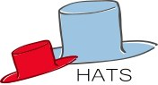
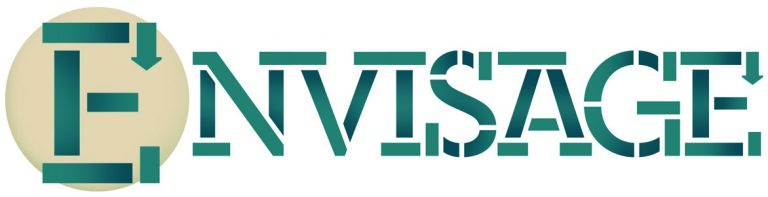
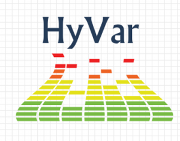
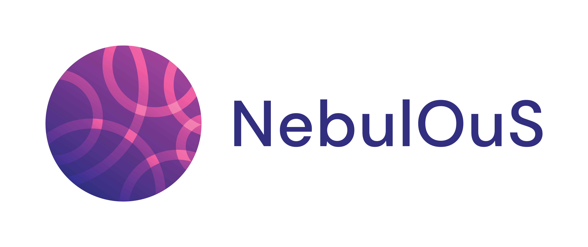

Acknowledgments¶
Projects¶
The development of the ABS language and tools has been supported by a number of research projects supported by the European Commission and the Research Council of Norway.
 |
HATS: Highly Adaptive and Trustworthy Software using Formal Methods |
 |
Envisage: Engineering Virtualized Services |
 |
HyVar: Scalable Hybrid Variability |
SIRIUS: Enabling digitalization in and beyond the oil and gas industry |
|
 |
NebulOuS: Advancing cloud continuum excellence |
{kind=link}
{kind=link}
{kind=link}
{kind=link}
{kind=link}
Contributors¶
The following people have contributed to the ABS language and tools so far:
Elvira Albert
Ade Azurat
Nikolaos Bezirgiannis
Joakim Bjørk
Frank de Boer
Andrea Borgarelli
Richard Bubel
Dave Clarke
Jesús Correas
Ferruccio Damiani
Crystal Chang Din
Antonio Flores-Montoya
Abel Garcia
Samir Genaim
Elena Giachino
Miguel Gómez-Zamalloa
Georg Göri
Stijn de Gouw
Reiner Hähnle
Einar Broch Johnsen
Eduard Kamburjan
Ivan Lanese
Cosimo Laneve
Michael Lienhardt
Kelly Lin
Enrique Martin-Martin
Jacopo Mauro
Radu Muschevici
Behrooz Nobakht
Olaf Owe
Luca Paolini
Björn Petersen
Germán Puebla
Violet Ka I Pun
Guillermo Román-Díez
Ina Schaefer
Rudi Schlatte
Vlad Serbanescu
Faiza Shehzad
Oliver Stahl
Martin Steffen
Volker Stolz
Lizeth Tapia Tarifa
Gianluca Turin
Lars Tveito
Peter Y.H. Wong
Ingrid Chieh Yu
Miky Zamalloa
Gianluigi Zavatarro